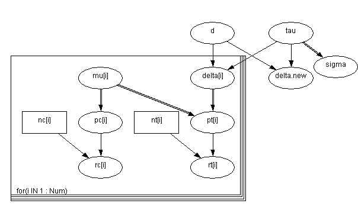
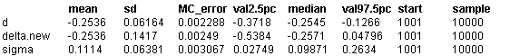

![[blockers0]](blockers0.bmp) Blocker: random effects
Blocker: random effects
meta-analysis of clinical
trials
Carlin (1992) considers a Bayesian approach to meta-analysis, and includes the following examples of 22 trials of beta-blockers to prevent mortality after myocardial infarction.
In a random effects meta-analysis we assume the true effect (on a log-odds scale)
d
i
in a trial
i
is drawn from some population distribution.Let r
C
i
denote number of events in the control group in trial
i
, and r
T
i
denote events under active treatment in trial
i
. Our model is:
r
C
i
~ Binomial(p
C
i
, n
C
i
)
r
T
i
~ Binomial(p
T
i
, n
T
i
)
logit(p
C
i
)
=
m
i
logit(p
T
i
) =
m
i
+
d
i
d
i
~ Normal(d,
t
)
``Noninformative'' priors are given for the
m
i
's.
t
and d. The graph for this model is shown in below. We want to make inferences about the population effect d, and the predictive distribution for the effect
d
new
in a new trial.
Empirical Bayes
methods estimate d and
t
by maximum likelihood and use these estimates to form the predictive distribution p(
d
new
| d
hat
,
t
hat
).
Full Bayes
allows for the uncertainty concerning d and
t
.
Graphical model for blocker example:

BUGS
language for blocker example:
model
{
for( i in 1 : Num ) {
rc[i] ~ dbin(pc[i], nc[i])
rt[i] ~ dbin(pt[i], nt[i])
logit(pc[i]) <- mu[i]
logit(pt[i]) <- mu[i] + delta[i]
mu[i] ~ dnorm(0.0,1.0E-5)
delta[i] ~ dnorm(d, tau)
}
d ~ dnorm(0.0,1.0E-6)
tau ~ dgamma(0.001,0.001)
delta.new ~ dnorm(d, tau)
sigma <- 1 / sqrt(tau)
}
Data
( click to open )
Inits for chain 1 Inits for chain 2
( click to open )
Results
A 1000 update burn in followed by a further 10000 updates gave the parameter estimates

Our estimates are lower and with tighter precision - in fact similar to the values obtained by Carlin for the empirical Bayes estimator. The discrepancy appears to be due to Carlin's use of a uniform prior for
s
2
in his analysis, which will lead to increased posterior mean and standard deviation for d, as compared to our (approximate) use of p(
s
2
) ~ 1 /
s
2
(see his Figure 1).
In some circumstances it might be reasonable to assume that the population distribution has heavier tails, for example a t distribution with low degrees of freedom. This is easily accomplished in
BUGS
by using the dt distribution function instead of dnorm for
d
and
d
new
.